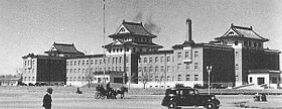

Биография Б. Момышулы
Место рождения: Аул Колбастау, Жуалинский район (Жамбылская область, Казахстан)
Бауыржан Момышулы проучился в Аулие-Атинской школе 9 классов, закончив ее в 1929 году. Исторический город Аулие-Ата(сейчас Тараз), по архивным данным, в 20-е годы прошлого века занимал территорию в девять тысяч гектаров, население было 24 тысячи человек. Планировка застроек практически отсутствовала, о генплане тогда и не слыхивали.
Он сменил множество профессий, работал учителем, секретарем Исполкома Совета народных депутатов района, начальником районной милиции, инструктором Алма-Атинского городского военкомата Казахской ССР, прокурором района. Благодаря этому набрался множеству полезных навыков.
В ноябре 1932 года Бауыржана призвали В Рабоче-Крестьянскую Красную Армию. Уже в следующем году он окончил училище Среднеазиатского военного округа и стал офицером, служил командиром взвода в 14 горнострелковом полку 3-й Туркестанской стрелковой дивизии. Отслужив положенный срок, был уволен, а 25 марта 1936 года призван снова и назначен командиром взвода в 315-й стрелковый полк

Среднеазиатского военного округа. Через год его полк влился в подразделение Отдельной Краснознаменной
Дальневосточной армии, а Бауыржан стал командиром полуроты. Становился командиром взвода противотанковой
батареи, помощником командира и командиром батареи,командиром артиллерийского дивизиона. В июле-августе 1938 года участвовал
в боях с японской Квантунской армией у озера Хасан командиром артиллерийской батареи.Штаб-квартира Квантунской армии
В феврале 1940 года он получил назначение в Житомир на должность командира 202-го отдельного противотанкового дивизиона, переведён в Киевский Особый военный округ, где с апреля служил помощником начальника штаба 406-го стрелкового полка 24-й стрелковой дивизии. Участвовал в присоединении Бессарабии к СССР. В январе 1941 года Бауыржана вновь перевели в Среднеазиатский военный округ и назначили старшим инструктором вневойсковой подготовки республиканского военкомата Казахской ССР. В июле 1941 года только что образованный штаб новой 316-й стрелковой дивизии начал сбор запасников из Казахстана и Киргизии, поэтому Момышулы был назначен командиром стрелкового батальона 1073-го стрелкового полка до начала Битвы за Москву, где он прославился своим героизмом.